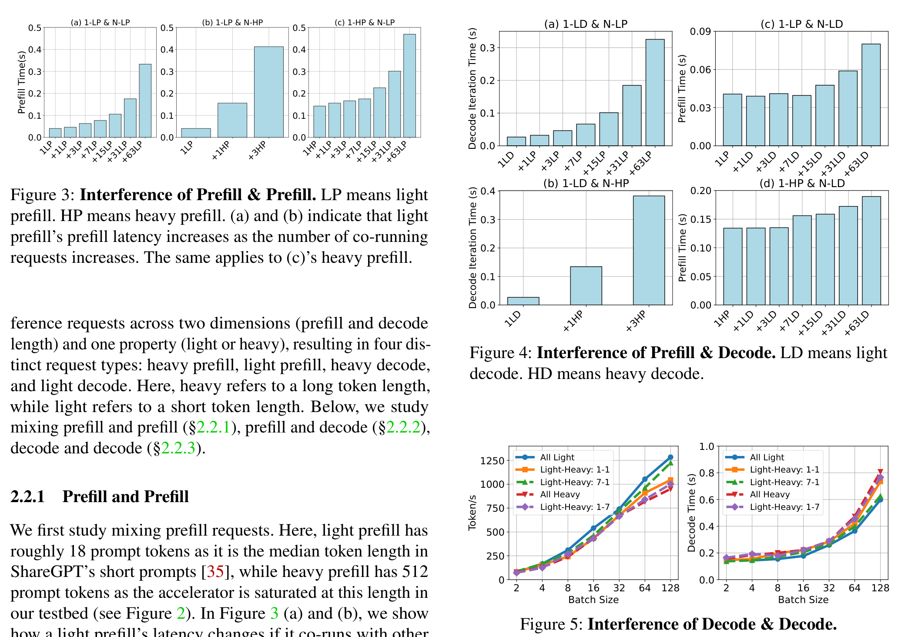
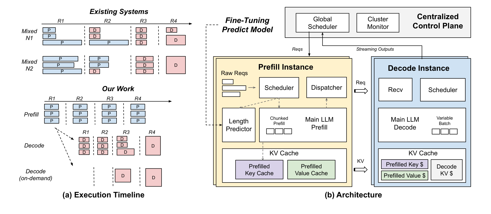

Inference without Interference / ShuffleInfer（ACM TACO 2025）
PD分离，token level？Splitwise 好像更早些提出PD分离
Background / Motivation
Sarathi 在同一实例内把 Prefill chunk 与 Decode 混合，利用 Decode 的计算余量；论文提出相反风险：P/D 即使能合批，也可能互相争抢计算、显存容量和带宽。

论文测了三类干扰实验：
1. Prefill 与 Prefill 干扰。 Prefill 是计算密集任务。GPU 达到计算饱和后继续加入 Prompt Token，不再提高 throughput，只会让每个请求等待更久。一个 LP 与 7/63 个 LP 同批时，延迟分别约增加 2×/8×；与 HP 同跑时可超过 10×。
2. Prefill 与 Decode 干扰。 Decode 是 latency-critical 的逐 Token 工作。一个 LD 与一个 HP 同处 continuous batch，单轮 Decode latency 就可能增加约 5×；反过来，大量 Decode 也会拖慢 Prefill，两者最高约同时慢 2.5×。
3. Decode 与 Decode 干扰。 长 Decode 会长期保留更大的 KV working set。batch size=128 时，若一半是 HD、一半是 LD，相比全 LD，throughput 下降 16%，Decode latency 增加 23%。短任务会被长任务的显存占用和带宽竞争拖住，形成 head-of-line blocking。
所以即使已经有 continuous batching，把不同阶段、不同长度的请求放在同一实例，仍会产生计算、显存容量和显存带宽三类竞争；调度器需要同时控制阶段隔离与长短任务分布。
Design
